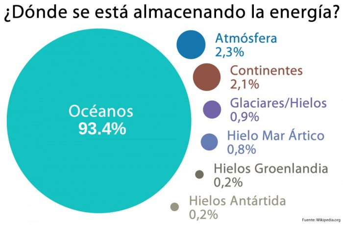

¿Ques es el Calentamiento Global?
El término Calentamiento Global se refiere al aumento gradual de las temperaturas de la atmósfera y océanos de la Tierra que se ha detectado en la actualidad, además de su continuo aumento que se proyecta a futuro. Nadie pone en duda el aumento de la temperatura global, lo que todavía genera controversia es la fuente y razón de este aumento de la temperatura. Aún así, la mayor parte de la comunidad científica asegura que hay más que un 90% de certeza que el aumento se debe al aumento de las concentraciones de gases de efecto invernadero por las actividades humanas que incluyen deforestación y la quema de combustibles fósiles como el petróleo y el carbón. Estas conclusiones son avaladas por las academias de ciencia de la mayoría de los países industrializados.

Si se revisa el gráfico de las temperaturas de la superficie terrestre de los últimos 100 años, se observa un aumento de aproximadamente 0.8ºC, y que la mayor parte de este aumento ha sido en los últimos 30 años.
La proyecciones a partir de modelos de clima fueron resumidos en el Cuarto Reporte del IPCC (Panel Intergubernamental sobre Cambio Climático) en el 2007. Indican que la temperatura global probablemente seguirá aumentando durante el siglo XXI, el aumento sería de entre 1.1 y 2.9ºC en el escenario de emisiones más bajo y entre 2.4 y 6.4ºC en el de mayores emisiones.
Un aumento de la temperatura global resultará en cambios como ya se están observando a nivel mundial, podemos enumerar:
1. Aumento de los niveles del mar
2. Cambios en el patrón y cantidad de precipitaciones
3. Expansión de los desiertos subtropicales
Mas sobre los efectos.
EfectosEl aumento de la temperatura se espera será mayor en los polos, en especial en el Ártico y se observará un retroceso de los glaciares, hielos permanentes y hielo en los mares.
Otros efectos incluirían clima extremo más frecuente, lo que incluye sequías, olas de calor, huracanes y precipitaciones fuertes. Se esperan extinciones de especies debido a los cambios de temperatura y variaciones fuertes en el rendimiento de las cosechas.
Se postula que si el aumento de la temperatura promedio global es mayor a 4ºC comparado con las temperaturas preindustriales, en muchas partes del mundo ya los sistemas naturales no podrán adaptarse y, por lo tanto, no podrán sustentar a sus poblaciones circundantes. En pocas palabras, no habrán recursos naturales para sustentar la vida humana en las condiciones actuales.
